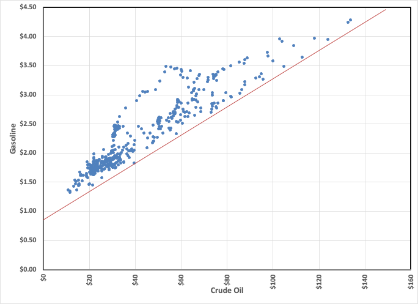

I’m Jonathan Burbaum, and this is Healing Earth with Technology: a weekly, Science-based, subscriber-supported serial. In previous installments of this serial, I have offered a peek behind the headlines of science, focusing on climate change/global warming/decarbonization.
I’ve recently had a number of new free subscribers. If that’s you, I recommend that starting at the beginning, since this is less of a “newsletter” and more of a series. You’ll benefit from the entire story. Just search the index for what interests you.
Sorry, there is no opener today. But, in the Sunday spirit of the late Tim Russert , “Go Bills!”
Today’s read: 4 minutes.
Following my last installment , I realized that I introduced at least some of the thinking behind holoeconomics earlier, specifically in my installment critiquing the energy cost(s) of Bitcoin and other PoW cryptocurrencies . In that installment, I pointed out that any market has an apparent natural firewall: When minimum cost exceeds the maximum price, a market naturally evaporates. It’s obvious but often overlooked, I think, because price and cost numbers are closely held secrets and, if they become known, can significantly change the terms of any deal.
Consider, as a typical example, the purchase of a new car. You, as the buyer, know what you can afford. The first thing a salesperson asks is, “How much were you thinking of spending?” And, as an intelligent buyer, you probably already consulted an online resource to determine “dealer invoice” for the car you think you want. If those questions get honest and accurate answers, the salesperson won’t show you cars you can’t afford. Instead, you’ll negotiate a selling price that’s close to what you think the dealer paid—after all, you’re going through the inevitable hassle of dealing with a salesperson, and what value do they add to the car? Of course, these numbers are usually slanted: Dealer invoice doesn’t include manufacturer’s rebates (to the dealer), and you’re not going to open up your finances to some salesperson. So negotiations ensue, and if the dealer/salesperson does not lose money on the transaction, it will close. But if you cannot afford the car, then if the deal closes anyway, someone will (eventually) go bankrupt. As I pointed out in my installment on Henry Ford , the Model T was designed on an estimate of what most families could afford to pay. Before that development, cars were a luxury and/or novelty item for the wealthy.
In discussing Bitcoin, I pointed out that the calculated energy costs of crypto “mining”, as modeled by Digiconomist , are well above the price the algorithm was designed to pay. Therefore, something is wrong with the model: In global markets for commodities 1 , there are only two critical factors: Cost and price. At some point, the supply-demand “curve” goes to zero, and the market disappears.
Energy ought to be the ultimate commodity, at least in economic terms. The customer does not discriminate based on the source. Take, for example, gasoline. Do you know or care whether the stuff you’re putting your the tank originated from a source that shares your values? Honestly, even if you did, oil refineries take in crude from wherever they can and mix it, so the differentiation happens well before the final sale. When last I looked, the only place to buy 100% “American” gasoline was in Salt Lake City.
So the hypothesis is this: There is a hidden floor beneath which gasoline prices will never sink, and that is when the price is near the cost of production. Production starts with crude oil, refined into gasoline, and we know the prices of both the raw material and the product. So what do we see when we compare the two?

Sure enough, there’s an apparent floor, represented by the red line. Deviations above the line represent profits accrued to the refinery, and when it’s not profitable (on or below the line), the price isn’t found.
This is in keeping with our shared experience. We’ve all seen that when there is a price shock in the oil market, gasoline prices almost immediately rise. This is because professional traders adjust their asking prices throughout the supply chain based on replacement costs, which are directly related to raw materials. However, when oil prices come down, gasoline prices come down much more slowly—Professional traders reduce their prices as soon as their customers show an inclination to switch based on price. This trickles down to the consumer, where habits change slowly if prices haven’t adjusted.
As further evidence, the chart also shows that the highest spread was in March 1980, in the aftermath of the Iranian Revolution. Artificial anxiety over fuel supply led to a recapitulation of the 1973 OPEC embargo (not on the chart) and consequent hoarding throughout the supply chain. The lowest spread was in December 2008, in the aftermath of the Great Recession. So it makes overall sense.
In economics, a commodity refers to goods that are not differentiated. In other words, consumers see no difference between the source of the good.